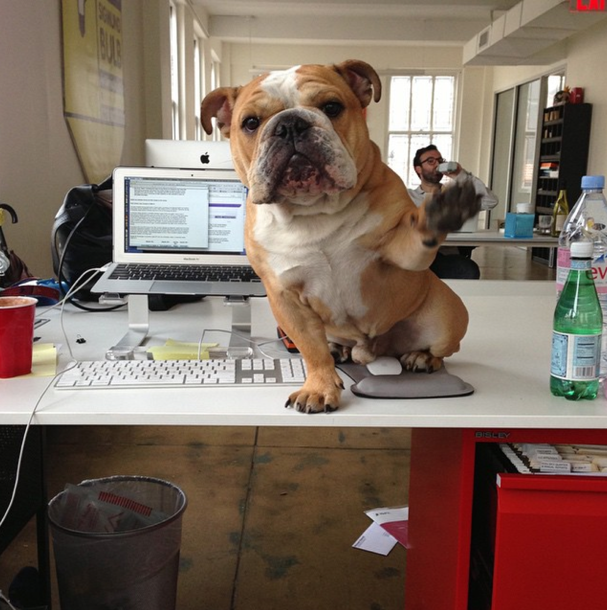
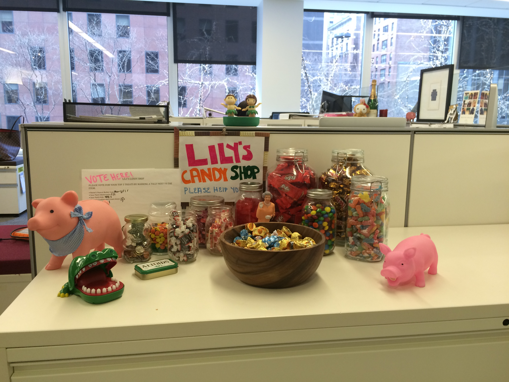
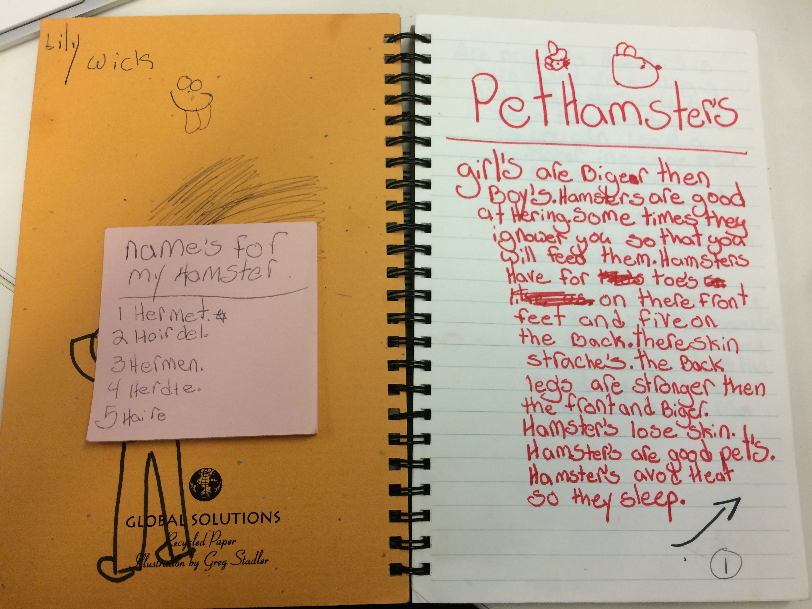
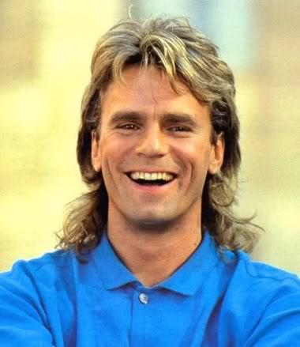
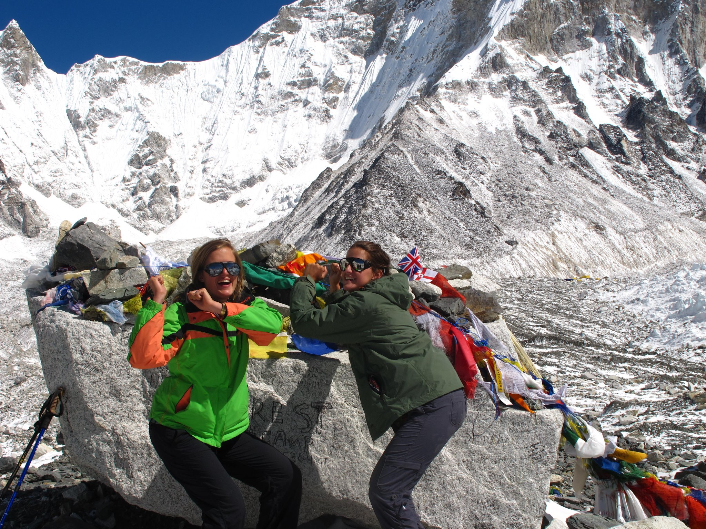
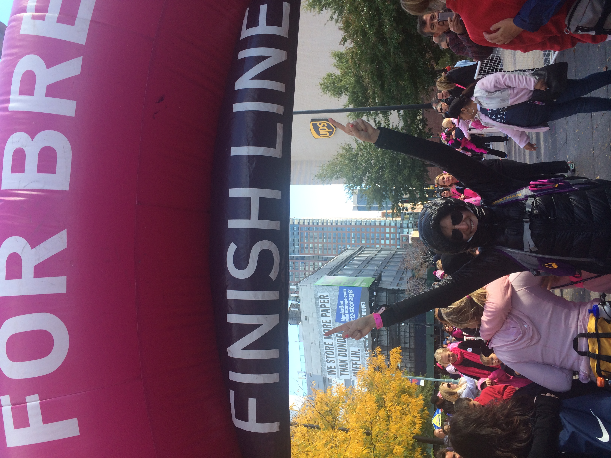

LILY WICK






Otto
Most bulldogs are ugly cute, or so people tell me. Not Otto. As you can see here, Otto is majestic. I have been Otto’s mother since the beginning of my senior year of college. Despite being completely irresistible, Otto has not been easy. He has major health and behavioral issues that, although much improved, do require special attention. Nonetheless, I love him unconditionally. I have always been an animal person (hence the hamster dreams), but since Otto, I have become a devoted animal lover. I love any and all things animal related, and am the first person to volunteer for any type of pet related activity.
(image source: personal)
Like many millennials, I graduated college unsure of what exactly I wanted to do, but nonetheless convinced that I would save the world. After two years working in advertising, I accepted a job at Avon in large part because I really liked the fact that the company had a very strong social justice agenda. Avon argues that women cannot be truly empowered unless their safety and health is guaranteed, which is why it is the largest corporate supporter of breast cancer research and the anti-domestic violence initiative. Immediately after joining Avon, I signed up for the New York Breast Cancer Walk, which involves walking 39.3 miles over two days. Full disclosure: I am not what you would call “active.” Physical exertion for me begins and ends with pilates and other such mat-friendly regimes. I think this actually worked to my advantage. Everyone I emailed, using #chooseboobs as my subject line as well as social media tag, was so shocked (and probably terrified) at the thought of me attempting this that I raised almost 10 times more than I set out to – almost $15,000. This is by far the recent accomplishment of which I am most proud.
Like many millennials, I graduated college unsure of what exactly I wanted to do, but nonetheless convinced that I would save the world. After two years working in advertising, I accepted a job at Avon in large part because I really liked the fact that the company had a very strong social justice agenda. Avon argues that women cannot be truly empowered unless their safety and health is guaranteed, which is why it is the largest corporate supporter of breast cancer research and the anti-domestic violence initiative. Immediately after joining Avon, I signed up for the New York Breast Cancer Walk, which involves walking 39.3 miles over two days. Full disclosure: I am not what you would call “active.” Physical exertion for me begins and ends with pilates and other such mat-friendly regimes. I think this actually worked to my advantage. Everyone I emailed, using #chooseboobs as my subject line as well as social media tag, was so shocked (and probably terrified) at the thought of me attempting this that I raised almost 10 times more than I set out to – almost $15,000. This is by far the recent accomplishment of which I am most proud.
McGyver
Much to my own surprise, I am extremely handy. I think I developed this skill out of necessity. I am the eldest of three girls. As a result, many of the duties that I imagine would otherwise fall to sons (largely because of societal stereotypes), end up falling in my lap. In addition, neither my mother nor father is particularly handy. I am frequently in the position where if I don’t figure out the solution, the problem simply won’t get fixed. I didn’t realize that this was an advantage until college, when my friends started calling me McGuyver after I knew to look for the fuse box when our lights mysteriously went out. Since then, I have taken great pride in my handiness and actively try to enhance my capabilities whenever possible.
image source: http://bit.ly/1C4p9Nd
Like many millennials, I graduated college unsure of what exactly I wanted to do, but nonetheless convinced that I would save the world. After two years working in advertising, I accepted a job at Avon in large part because I really liked the fact that the company had a very strong social justice agenda. Avon argues that women cannot be truly empowered unless their safety and health is guaranteed, which is why it is the largest corporate supporter of breast cancer research and the anti-domestic violence initiative. Immediately after joining Avon, I signed up for the New York Breast Cancer Walk, which involves walking 39.3 miles over two days. Full disclosure: I am not what you would call “active.” Physical exertion for me begins and ends with pilates and other such mat-friendly regimes. I think this actually worked to my advantage. Everyone I emailed, using #chooseboobs as my subject line as well as social media tag, was so shocked (and probably terrified) at the thought of me attempting this that I raised almost 10 times more than I set out to – almost $15,000. This is by far the recent accomplishment of which I am most proud.
Like many millennials, I graduated college unsure of what exactly I wanted to do, but nonetheless convinced that I would save the world. After two years working in advertising, I accepted a job at Avon in large part because I really liked the fact that the company had a very strong social justice agenda. Avon argues that women cannot be truly empowered unless their safety and health is guaranteed, which is why it is the largest corporate supporter of breast cancer research and the anti-domestic violence initiative. Immediately after joining Avon, I signed up for the New York Breast Cancer Walk, which involves walking 39.3 miles over two days. Full disclosure: I am not what you would call “active.” Physical exertion for me begins and ends with pilates and other such mat-friendly regimes. I think this actually worked to my advantage. Everyone I emailed, using #chooseboobs as my subject line as well as social media tag, was so shocked (and probably terrified) at the thought of me attempting this that I raised almost 10 times more than I set out to – almost $15,000. This is by far the recent accomplishment of which I am most proud.